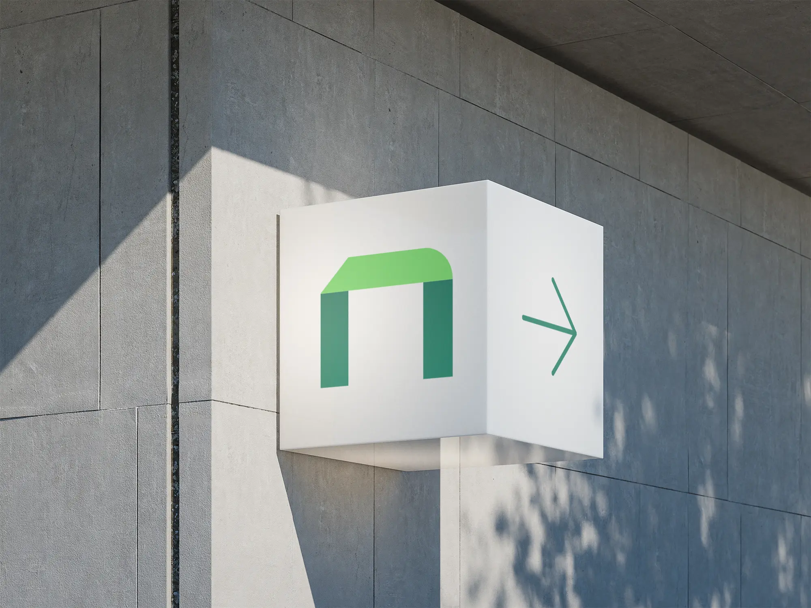
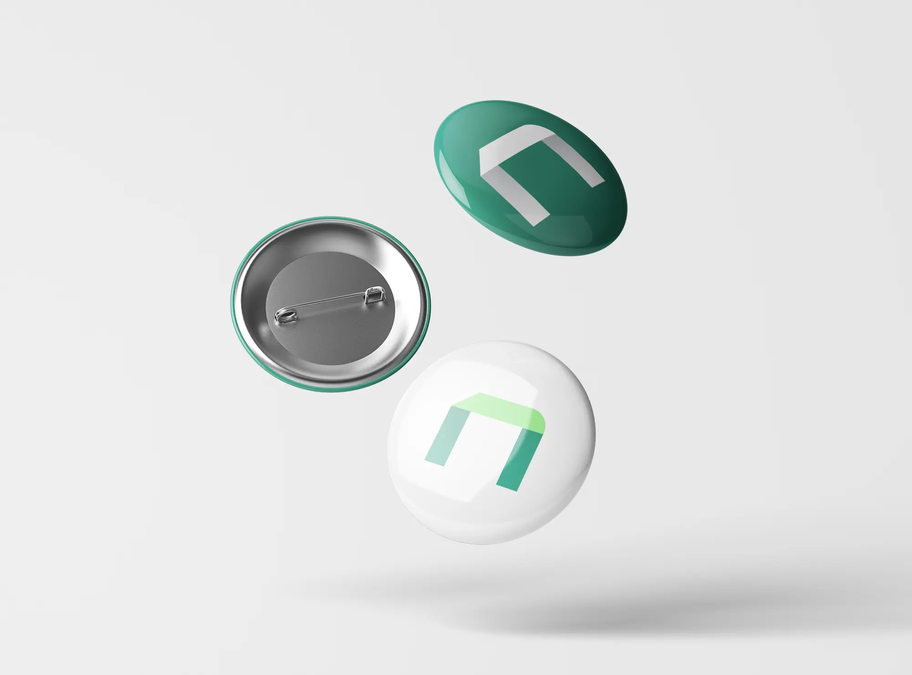

Logo Design Project
The logo design described emphasizes modernity, simplicity, and memorability through the use of geometric shapes that convey technology and fluidity. This approach aligns with current values brand, focusing on empowering and innovate to support a growing brand identity. The design aims to position the agency as a high-value company.